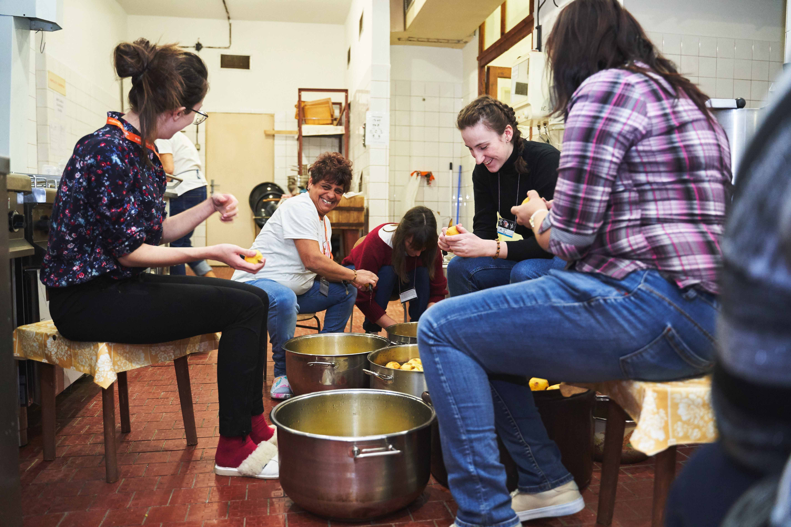

Aktuality
Najnovšia aktualita
Ak tu kliknem tak ma to hodí na celý článok Pastoračné centrum Anny Kolesárovej - centrum mladých vo Vysokej nad Uhom - slúži p --- MAX 150 ZNAKOV ---

Staršia akutalita
Ak tu kliknem tak ma to hodí na celý článok